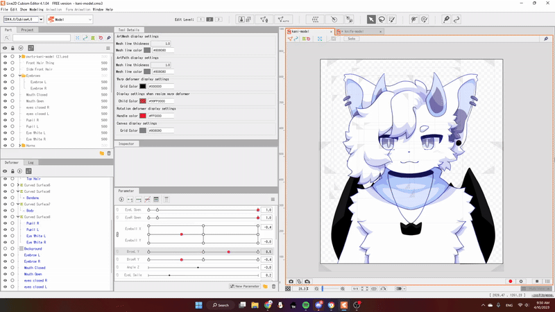
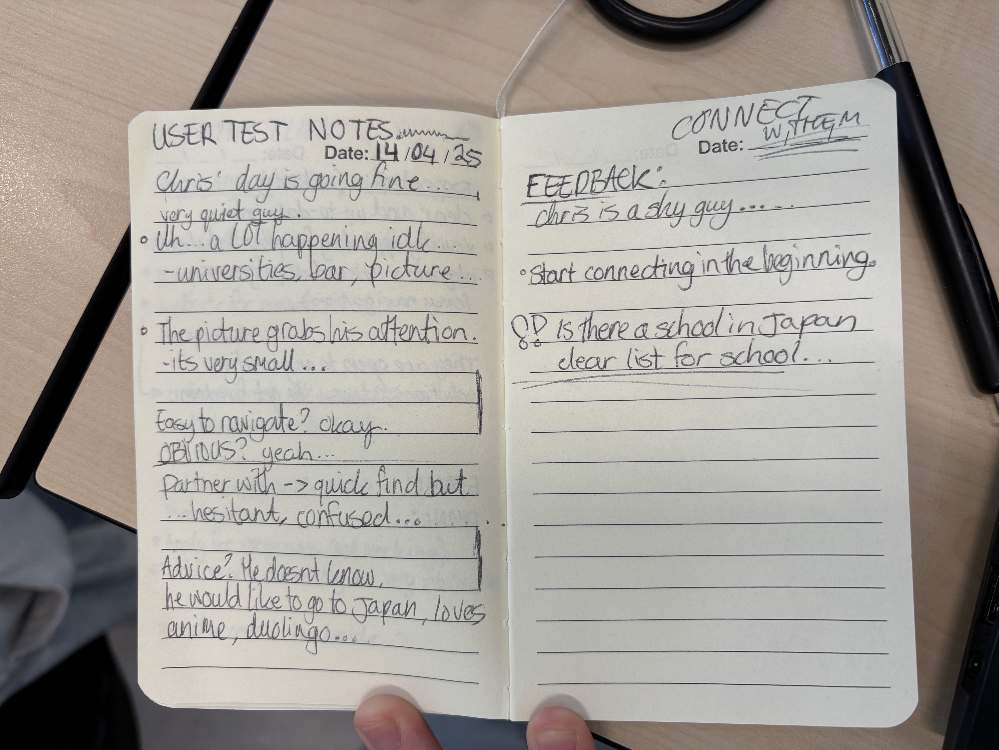
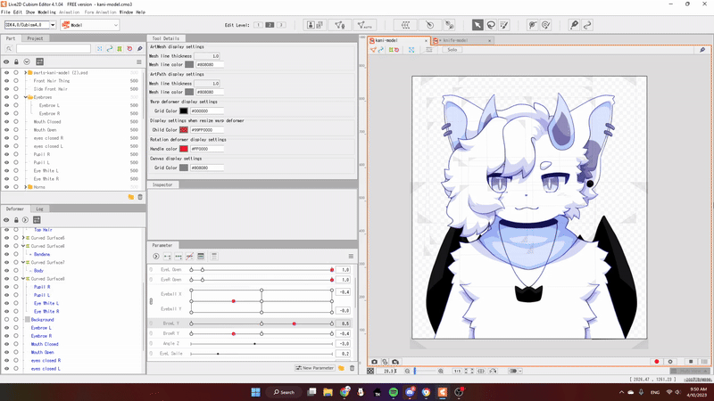
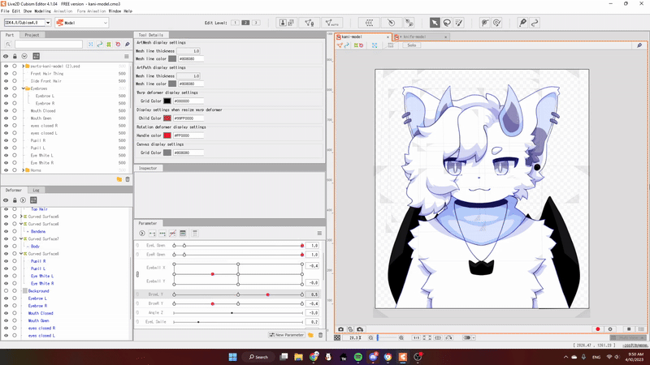

#expectations
I went to the We Are Playgrounds event with school today! At first, I was pretty nervous...
Most of you know I'm not a big fan of travelling, nor do I handle big crowds very well. And sitting through lectures...
Eugh. However, I was excited about the guests that would be attending!
#experience
My love for art made me able to go (despite my anxiety), and I hoped I could learn a lot - which I did!!
I already knew a lot about the art-related things, but I feel like it was a good step for me socially.
I spoke to Feefal (I've loved her work for many years!) and got her art book, which she signed!
Absolutely one of my prized possessions now.
I wish I could have attended Aaron Blaise's panel, but I couldn't, since his panel was rather late.
I watched a lot of Brother Bear as a child, and it inspires me to this day.
I hung out with friends as we made our way through the event.
It felt like the other conventions I've been to, giving me a comforting sense of familiarity.
I was blown away by the amazing art they had on display, and I bought some very cute stuff at the artist alley <3
Support small businesses!
I left in the afternoon after feeling overstimulated.
#reflection
I had seen most of the event and didn't feel like sticking around for the later panels.
It was a very fun day though, I hope to go again next year <3 I bet they have amazing artists then as well!
For our study, we have to show that we meet the requirements for certain learning outcomes.
They're basically goals. I'll explain all five individually and show how I meet the requirements.
The full description of this learning outcome provided by Fontys is:
"You orient in the relevant tech, media and design landscape and create interactive media products that you have tested with users and stakeholders."

Proof 1:
I've made a few interactive media products. During semester 1, I created a little site as a way to test things out.
Everything was as good as brand new for me at this point. (Image 1)
Proof 2:
I have created a VTube model for somebody else as part of a trade. (Image 2) Once I had confirmation of the static avatar being correct, I continued with rigging the model. (Image 3)
Once that was done, I only had to add physics to the model. (Image 4)
Of course, I made sure to give them a concise guide so they don't struggle too much with getting it to work. (Image 5)
Proof 3:
Lastly, this entire site also serves as an example of interactive media. I love trying to incorporate as many fun things as I can.
The full description of this learning outcome provided by Fontys is:
"You explore front-end development languages, you write code and document in a version control environment."
Proof 1:
I'm learning how to use Git. I've never understood it before, but I'm slowly beginning to get the gist of it.
I have continuously uploaded my versions to a repository. (Image 1)(Image 2)
Proof 2:
Here is the code for this website. I used HTML (Image 3)
, CSS (Image 4)
, and JavaScript (Image 5).
For CSS and JavaScript I used W3Schools as reference. At one point I couldn't get the JavaScript to work as I wanted it to, so I asked ChatGPT for help.
Feel free to inspect the site to see more code.
The full description of this learning outcome provided by Fontys is:
"You explore and use professional design tools and you iteratively design visual works."
Proof 1:
Here, I have created multiple logo variations for the same subject. In image 1 it's different ideas for a Fontys logo, meant to spark different emotions with every iteration.
In image 2 it's for our client. These were provided to her, and she picked out her favorites.
Proof 2:
I have added the iterative process between me and the client, Morphienn. I was tasked with creating a persona design for her.
Together, we worked and communicated until we had a result that she was happy with. Please click the images to see them in full size.
The full description of this learning outcome provided by Fontys is:
"You apply professional practice, both individually and in teams, in the areas of project organisation, communication with stakeholders, exploratory research, and reporting."

Proof 1:
The proof I provided in LO 3 should also cover this learning outcome.
I communicated clearly with Morphienn and navigated together with her in order to find a design that works.
Proof 2:
As a group, we have carried out a user test, using a prototype of our website.
We conducted it on an individual named "Chris".
We took notes as it went on. (Image 1)
Proof 3:
Here is a snippet of our group planning. (Image 2)
Proof 4:
As a group, we carried out research to find out who our target audience is.
We created a form for others to fill in. The data of this form was used for our project. Click here for the questionnaire.(Image 3)
The full description of this learning outcome provided by Fontys is:
"You take the initiative in asking for, and reflecting on, feedback. You identify your own core values as the basis for your study career and professional development."
Proof 1:
I have continuously asked for feedback from the teachers throughout the semester.
During these moments I have talked about my progress and my plans.
I reflected on what I've done so far and what I can do better going forward. (Image 2)
Proof 2:
In the blog tab, you can find my report of the We Are Playgrounds event.
I wrote about my expectations, my experience, and my thoughts of it afterwards.


 
